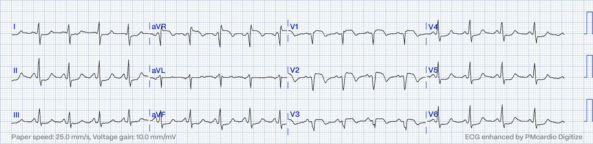
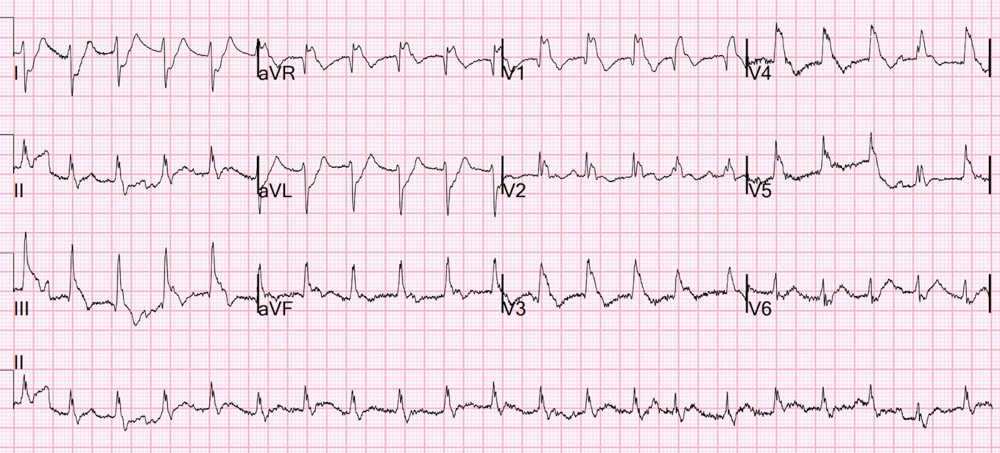
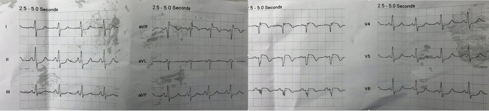
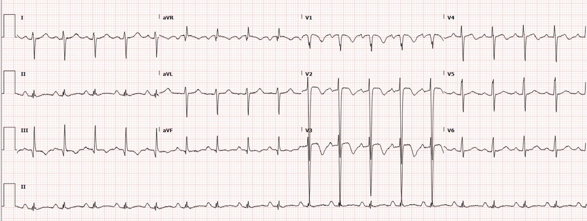
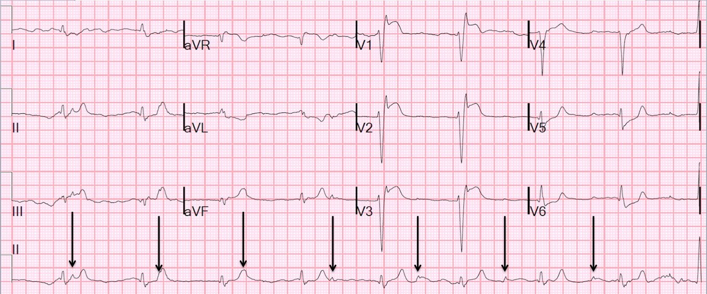
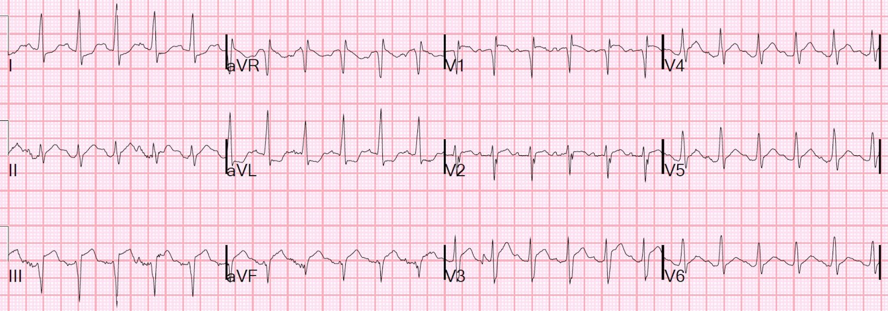
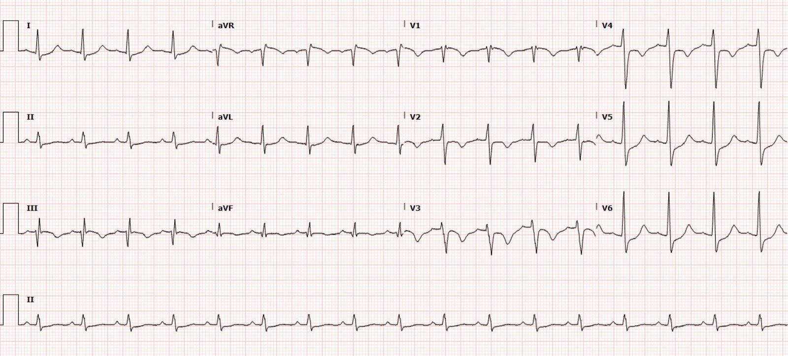
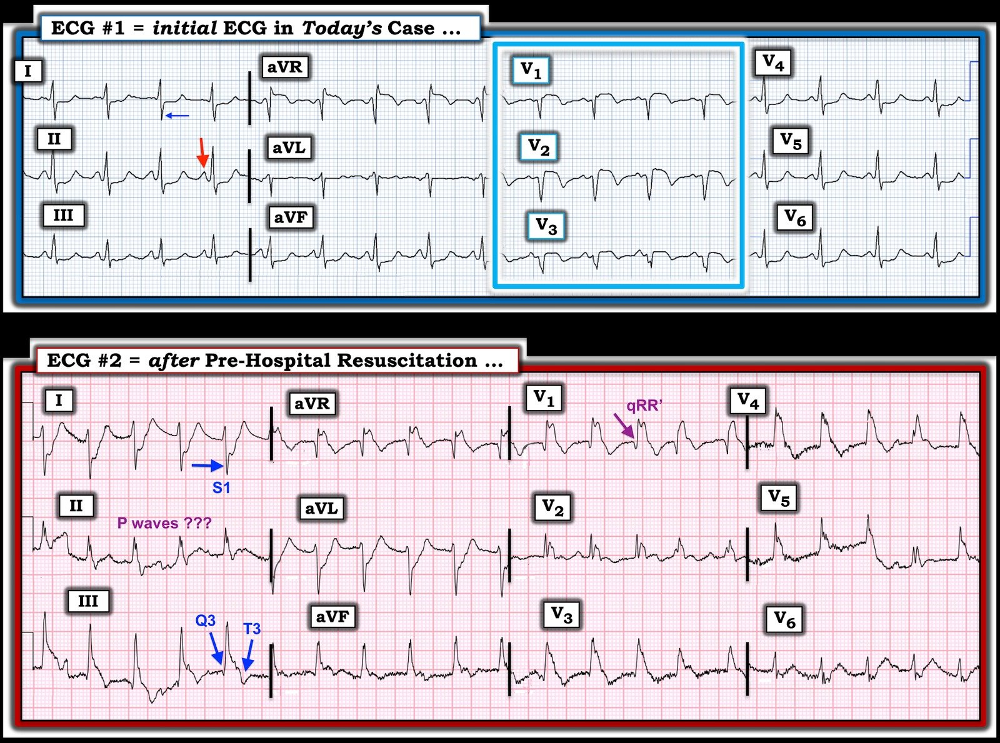

08/01/2024 — Bạn nghi ngờ gì từ điện tâm đồ này ở một bệnh nhân ngoài 40 tuổi có khó thở và đau ngực?
Bản dịch tiếng Việt của bài "What do you suspect from this ECG in this 40-something with SOB and Chest pain?" – Dr. Smith’s ECG Blog. Giữ nguyên toàn bộ 10 hình ảnh của bản gốc.
Tôi đang xem lại các điện tâm đồ cho một nghiên cứu thì bắt gặp bản ghi này, và đã lấy được toàn bộ thông tin lâm sàng:


Bạn nghĩ gì?
Queen chẩn đoán “OMI với độ tin cậy cao” do ST chênh lên ở V1-V3.
Diễn giải của Smith: Điều này rất có khả năng là do tăng gánh tim phải (right heart strain) cực độ và gần như đủ để chẩn đoán thuyên tắc phổi (pulmonary embolism).
Để tôi kể về lần nhập viện của cô ấy, xuất viện 1 ngày trước đó, nhưng là ở một bệnh viện khác (ước gì tôi có điện tâm đồ của lần nhập viện đó):
Bệnh nhân 40 tuổi, đến một bệnh viện khác vì đau ngực và khó thở (SOB). Cô ấy đang ngồi làm việc thì cảm thấy “từng đợt tức ngực”. Từ lúc đó, cô ấy bị khó thở kèm đau ngực kiểu đè ép. Bất kỳ gắng sức nào cũng làm khó thở nặng hơn đáng kể. Cô ấy cũng có ho về đêm. Cô ấy để ý thấy hai mắt cá chân hơi phù.
Tôi không có điện tâm đồ đó, nhưng nó được mô tả là “không có giá trị chẩn đoán” (điều đó có lẽ có nghĩa là bác sĩ không biết cách chẩn đoán nó).
Troponin I của cô ấy là 900 ng/L. Cô ấy được chẩn đoán nhồi máu cơ tim không ST chênh lên (Non-STEMI) và được giữ lại qua đêm để chụp mạch vành vào ngày hôm sau. Trên siêu âm tim chính thức, thất trái bình thường và “thất phải nổi bật”.
“Bệnh nhân được cho dùng aspirin, nitro ngậm dưới lưỡi và heparin. Bệnh nhân đỡ đau đáng kể với nitro và được truyền nitro liên tục. Tôi đã trao đổi mọi kết quả với bệnh nhân. Tôi đã bàn về ca này với khoa Tim mạch, họ sẽ nhận bệnh nhân vào khoa.”
Cô ấy được chụp mạch vành và các động mạch vành bình thường.
Vậy mà cô ấy vẫn được cho xuất viện với chẩn đoán NSTEMI!
Chẩn đoán thực sự là gì?
Vì sao họ lại neo vào chẩn đoán NSTEMI?
Có lẽ vì troponin cao kèm đau ngực.
Ngày hôm sau cô ấy gọi 911 vì đau ngực và khó thở nặng hơn.
Nhân viên cấp cứu ngoài viện thấy cô ấy nửa tỉnh nửa mê, xanh tái, lạnh, vã mồ hôi, thở nhanh, tụt huyết áp rất nặng. SpO2 là 88%. Phổi nghe trong.
Nhân viên cấp cứu ghi điện tâm đồ ở trên và phát báo động STEMI. Bệnh nhân ngừng tim trước khi đến viện. Cô ấy được hồi sức thành công trong thời gian ngắn và đến khoa cấp cứu (ED) còn sống, đủ lâu để ghi thêm một điện tâm đồ nữa:


Tất cả điều này có thể đều do tăng gánh thất phải (RV strain), hoặc ST chênh lên (STE) ở các chuyển đạo dưới cũng có thể do mất cân bằng cung-cầu (STEMI típ II)
Cô ấy được dùng 100 mg tPA nhưng lại ngừng tim lần nữa và không thể hồi sức được.
Chẩn đoán rõ ràng và lý do ngừng tim là gì?
Dĩ nhiên đó là thuyên tắc phổi. Không hề làm D-dimer hay chụp CT mạch phổi khi họ phát hiện cô ấy có động mạch vành bình thường.
Neo chẩn đoán (diagnostic anchoring) do đau ngực và troponin tăng
Một ca bệnh bi thảm.
Các ca thuyên tắc phổi khác có ST chênh lên ở V1
Chest pain, ST Elevation, and tachycardia in a 40-something woman (Đau ngực, ST chênh lên và nhịp nhanh ở một phụ nữ ngoài 40 tuổi)


A man in his 40s w a highly specific ECG (there are several other ECGs at this post) (Một người đàn ông ngoài 40 tuổi với điện tâm đồ rất đặc hiệu (bài này còn có vài điện tâm đồ khác))


Syncope, Shock, AV block, RBBB, Large RV, “Anterior” ST Elevation in V1-V3 (Ngất, sốc, blốc AV, RBBB, thất phải lớn, ST chênh lên “thành trước” ở V1-V3)


Sudden Severe SOB and ST Segment Elevation: What is the Diagnosis and Treatment? (Khó thở nặng đột ngột và đoạn ST chênh lên: chẩn đoán và điều trị là gì?)


A man in his 30s with cardiac arrest and STE on the post-ROSC ECG (Một người đàn ông ngoài 30 tuổi ngừng tim và có ST chênh lên trên điện tâm đồ sau ROSC)



===================================
BÌNH LUẬN CỦA TÔI, bởi KEN GRAUER, MD (8/1/2024):
===================================
Hy vọng duy nhất của tôi về ca bệnh bi thảm hôm nay — là những người tham gia chăm sóc sẽ học hỏi từ những sai lầm đã mắc.
- 2 điện tâm đồ được ghi trong ca hôm nay rất đáng suy ngẫm. Để cho rõ, trong Hình 1 — tôi đã đặt lại và đánh nhãn các bản ghi này.
Cách tốt nhất để không bỏ sót chẩn đoán cấp tính PE (thuyên tắc phổi – Pulmonary Embolism) — là nhớ nghĩ đến chẩn đoán này.
- Hãy nghĩ đến chẩn đoán này khi bệnh nhân đến với lý do chính là SOB (khó thở – Shortness Of Breath) — hoặc khi ngoài CP (đau ngực – Chest Pain), bệnh nhân còn có SOB.
- Hãy nghĩ đến chẩn đoán này khi một bệnh nhân có CP và SOB + troponin tăng — lại có động mạch vành bình thường khi thông tim.
- Hãy nghĩ đến chẩn đoán này khi một bệnh nhân có CP và SOB lại gọi EMS vì CP vào ngày sau khi đã loại trừ tắc mạch vành cấp (tức là bằng thông tim làm hôm trước) — đặc biệt khi độ bão hòa O2 giảm.
- Và đặc biệt — Hãy nghĩ đến chẩn đoán PE cấp khi điện tâm đồ của bệnh nhân trông giống bản ghi đầu tiên trong ca hôm nay ( = điện tâm đồ #1 trong Hình 1).
- Điểm MẤU CHỐT: Trong suốt quá trình — Hãy đếm nhịp thở của bệnh nhân tự mình! Hành động đơn giản là đếm tần số thở của bệnh nhân rất thường bị đánh giá thấp — vậy mà lại rất hữu ích khi tần số thở nhanh, giúp làm nổi bật nhu cầu phải đánh giá về hô hấp.
===================================
2 điện tâm đồ trong CA BỆNH hôm nay:


Các dấu hiệu điện tâm đồ gợi ý PE cấp:
Chúng tôi đã trình bày rất nhiều ca PE cấp trong nhiều bài trên Dr. Smith’s ECG Blog. Trước đây tôi đã điểm lại những dấu hiệu điện tâm đồ cụ thể cần tìm (Xem Bình luận của tôi ở cuối trang trong bài ngày 1 tháng Chín năm 2020 — bài ngày 4 tháng Ba năm 2023 — và trong bài ngày 6 tháng Ba năm 2022, cùng nhiều bài khác. Tôi có đưa một Bảng tóm tắt các dấu hiệu điện tâm đồ trong Hình 2 của PHẦN BỔ SUNG bên dưới).
- Không có một dấu hiệu điện tâm đồ đơn lẻ nào đủ để chẩn đoán PE cấp. Tuy vậy, với bối cảnh lâm sàng gợi ý trong ca hôm nay — điều quan trọng là nhận ra sự kết hợp các dấu hiệu chẩn đoán hướng tới chẩn đoán này ở cả hai điện tâm đồ được ghi.
Điện tâm đồ ban đầu:
Như Dr. Smith đã nêu — điện tâm đồ #1 được đội cấp cứu ngoài viện (EMS) ghi vào ngày sau khi người phụ nữ 40 tuổi này được cho xuất viện với chẩn đoán NSTEMI, dù động mạch vành bình thường khi thông tim. Triệu chứng của cô ấy lúc ghi điện tâm đồ #1 là CP và SOB — vậy mà việc đọc bản ghi ban đầu này lại dẫn tới báo động STEMI. Các dấu hiệu MẤU CHỐT trên điện tâm đồ #1 gồm:
- Nhịp nhanh xoang ~110 lần/phút.
- Gợi ý trục lệch phải (sóng S ở chuyển đạo I sâu đến bất ngờ ).
- Sóng P nhọn ở các chuyển đạo dưới (chưa hẳn đạt tiêu chuẩn biên độ 2.5 mm của bất thường nhĩ phải (RAA) thực sự — nhưng vẫn mang tính gợi ý trong bối cảnh lâm sàng này).
- Gợi ý “tăng gánh” thất phải (như thấy trong hình chữ nhật MÀU XANH LAM — ST dạng vòm (coving) kèm chênh lên nhẹ và sóng T đảo ngược đối xứng, khá sâu ở các chuyển đạo trước).
- ST chênh lên ở chuyển đạo aVR.
- ST chênh xuống lan tỏa (thấy ở 6 chuyển đạo = II,III,aVF; và V4,5,6).
BÌNH LUẬN: Dù có thể hiểu vì sao các phức bộ QS kèm ST dạng vòm và chênh lên trên điện tâm đồ #1 có thể khiến lo ngại nhồi máu cơ tim cấp — thông tim làm một hai ngày trước đó cho thấy động mạch vành bình thường — và khó thở là một triệu chứng chính khi đến khám. Với biểu hiện lâm sàng như vậy — sự kết hợp các dấu hiệu điện tâm đồ nêu trên lẽ ra phải ngay lập tức khiến lo ngại PE cấp .
- Điểm MẤU CHỐT: Dấu hiệu điện tâm đồ thuyết phục nhất nằm trong hình chữ nhật MÀU XANH LAM — cụ thể là ST dạng vòm kèm sóng T đảo ngược đối xứng, rõ rệt ở các chuyển đạo trước. Ở một bệnh nhân nhịp nhanh có khó thở — “tăng gánh” thất phải cấp do PE sẽ là lời giải thích khả dĩ hơn nhiều cho dấu hiệu này so với sóng T tái tưới máu do nhồi máu gần đây.
===================================
Điện tâm đồ thứ 2 (sau hồi sức trước viện):
Như đã nói ở trên — điện tâm đồ #2 là bản ghi trước viện được ghi sau hồi sức — có lẽ chỉ một thời gian ngắn sau điện tâm đồ #1. Các dấu hiệu đáng chú ý gồm:
- Nhịp nhanh vẫn còn — nhưng không còn thấy sóng P! Nhịp nhìn chung khá đều, dù có đôi chút không đều ở các chuyển đạo ghi đồng thời V1,V2,V3.
- Phức bộ QRS đã giãn rộng — phù hợp với RBBB. Sóng S ở chuyển đạo I đã sâu hơn — phù hợp với hoặc LPHB hoặc tăng mức trục lệch phải do “tăng gánh” thất phải cấp.
- Dù QRS giãn rộng trên điện tâm đồ #2 — tôi rất nghi đây là nhịp trên thất vì phần lệch đầu tiên của QRS (cả hướng lẫn độ dốc) rất giống với phần lệch đầu tiên của QRS trên điện tâm đồ #1 ở rất nhiều chuyển đạo ( ? Nhịp nhanh bộ nối?).
- Giờ đã thấy S1Q3T3 (Trong khoảng thời gian từ khi ghi điện tâm đồ #1 — giờ ta thấy sóng q rõ ràng ở chuyển đạo III — và dù có nhiễu, có vẻ có sóng T đảo ngược đối xứng ở chuyển đạo III).
- Thấy hình dạng qRR’ ở chuyển đạo V1. Dù phù hợp với RBBB (sóng S tận rộng thấy ở các chuyển đạo bên I và V6) — qR ở V1 có lẽ là chỉ dấu của tăng áp lực động mạch phổi do “tăng gánh” thất phải nặng (Xem Bình luận của tôi trong bài ngày 28 tháng Ba năm 2022 trên Dr. Smith’s ECG Blog).
- Dù có nhiễu — vẫn có sóng T đảo ngược ở các chuyển đạo dưới và trước, chỉ điểm “tăng gánh” thất phải.
- Có ST chênh lên ở chuyển đạo III và aVR.
BÌNH LUẬN: Vì điện tâm đồ #2 được ghi sau ngừng tim phổi — tôi đọc bản ghi này là cho thấy các dấu hiệu đã tiến triển so với điện tâm đồ #1, và gần như khẳng định nguyên nhân là PE cấp diện rộng.
===================================
PHẦN BỔ SUNG:
Nắm được tập hợp các dấu hiệu điện tâm đồ trình bày trong Hình 2 (nhiều dấu hiệu trong số đó có mặt ở dạng tinh tế hoặc ít tinh tế hơn) — chính là lý do vì sao chỉ trong vài giây sau khi nghe bệnh sử của ca hôm nay, chúng ta nên ngay lập tức nghi ngờ nguyên nhân là PE cấp diện rộng.

===================================
LƯU Ý: Điện tâm đồ ít có khả năng giúp chẩn đoán các PE tương đối nhỏ (tức là dưới phân thùy) không gây ảnh hưởng đáng kể về huyết động, và thường chỉ được phát hiện trên CT ngực ở những bệnh nhân có triệu chứng kém thuyết phục hơn.
- Điều này có lẽ là một “điều tốt” — vì còn thiếu bằng chứng cho thấy điều trị các PE dưới phân thùy phát hiện tình cờ, không ảnh hưởng đáng kể về huyết động là có lợi (và chắc chắn việc điều trị không phải không có nguy cơ gây hại).
- Có lẽ việc điện tâm đồ khó giúp phát hiện các thuyên tắc phổi tương đối nhỏ lại là một “lợi ích trá hình”.
===================================